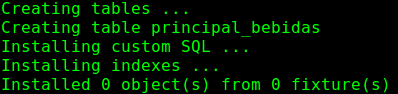

Para crear nuestra primer aplicación, desde la terminal y en la carpeta del proyecto, debemos digitar:
python manage.py startapp principal
Esto creará un directorio y cuatro archivos más, lo que nos dejaría con una estructura de archivos como esta:
manage.py
projName [dir]
__init__.py
settings.py
urls.py
wsgi.py
principal [dir]
__init__.py
models.py
test.py
views.py
admin.py
Un miniproyecto para entender mejor
Con fines didácticos, a partir de este punto, los ejemplos serán presentados en el contexto de una pequeña aplicación tipo recetario. Así los nombres de los directorios, plantillas (templates) y funciones tendrán relación con dicho ámbito. Sin embargo los conceptos y principios se mantienen generales.
El objetivo es ganaer claridad en la defición de los conceptos, y exponer al lector desde el comienzo con los detalles de la implementación de un projecto en Django.
Modelo, template y vista en 15 minutos
Antes de continuar, debe quedar claro que esto solamente es un pequeño ejemplo, el modelo, vista y plantillas serán desarrolladas a detalle en las secciones subsecuentes.
Se creara un nuevo proyecto con el nombre de recetario, dentro de este crearemos una primera aplicacion denominada principal. La estructura de directorios después de estas opraciones es:
manage.py
db.sqlite3
recetario [dir]
__init__.py
settings.py
urls.py
wsgi.py
principal [dir]
__init__.py
models.py
test.py
views.py
admin.py
Models.py
Editar el archivo models.py correpondiente a la aplicacion principal de forma que tengamos:
from django.db import models
class Bebida(models.Model):
nombre = models.CharField(max_length=50)
ingredientes = models.TextField()
preparacion = models.TextField()
def __unicode__(self):
return self.nombre
Views.py
De igual forma editar el archivo view.py hasta dejarlo de la siguiente forma:
from principal.models import Bebida
from django.shortcuts import render_to_response
def lista_bebidas(request):
bebidas = Bebida.objects.all()
return render_to_response('lista_bebidas.html',{'lista':bebidas})
Admin.py
El contenido de este archivo debe ser:
from principal.models import Bebida
from django.contrib import admin
admin.site.register(Bebida)
URLs.py
El archivo debe contener:
from django.conf.urls import patterns, include, url
from django.contrib import admin
admin.autodiscover()
urlpatterns = patterns('',
url(r'^$','principal.views.lista_bebidas'),
url(r'^admin/doc/', include('django.contrib.admindocs.urls')),
url(r'^admin/', include(admin.site.urls)),
)
Settings.py
Debemos buscar la directiva TEMPLATE_DIRS y djarla de esta forma:
En esta sección le estamos diciendo que debe buscar las plantillas dentro de la carpeta del proyecto, en una carpeta llamada plantillas, como esta carpeta aún no existe debemos crearla manualmente dentro de recetario.
Lista_bebidas.html
Este archivo no existe, lo crearemos manualmente dentro de la carpeta plantillas recientemente creada dentro del directorio recetario. Su contenido es:
<!DOCTYPE html>
<html lang='es'>
<head>
<title>Lista de bebidas de ejemplo</title>
<meta charset='utf-8'>
</head>
<body>
<h1>Recetario de Bebidas</h1>
{% for elemento in lista %}
<ul>
<li><strong>{{elemento.nombre}}</strong></li>
<li>{{elemento.ingredientes}}</li>
<li>{{elemento.preparacion}}</li>
</ul>
{% endfor %}
</body>
</html>
Poner en funcionamiento todo
Listo, tenemos todo listo para ver funcionando nuestro ejemplo, para ello debemos de sincronizar nuevamente nuestra base de datos, para ello, nos ubicamos en la carpeta principal del proyecto (aquella donde se encuentra el archivo manage.py). Una vez en la carpeta principal, desde una terminal digitamos:
python manage.py syncdb
Esto nos dará el siguiente resultado: (prestar atención a la segunda línea que nos indica la creación de una nueva tabla):

Creación de tabal principal_bebidas
Una vez realizado esto, lanzamos nuestro servidor de desarrollo:
python manage.py runserver
Nos ubicamos en http://127.0.0.1:8000/admin, ingresamos con nuestros datos configurados en la primera vez que sincronizamos la base de datos (si no recuerdas los datos que pusiste, puedes borrar el archivo recetario.db y volver a digitar: python manage.py syncdb para resincronizar).
Una vez dentro de la interfaz administrativa veremos que aparece una opción Bebidas. Podemos seguir intuitivamente la interfaz e ingresar datos.
Una vez guardados podemos ir a http://127.0.0.1:8000/ y veremos lo que acabamos de ingresar. De esta manera ya tienes una interfaz rápida de ingreso y visualización de datos.